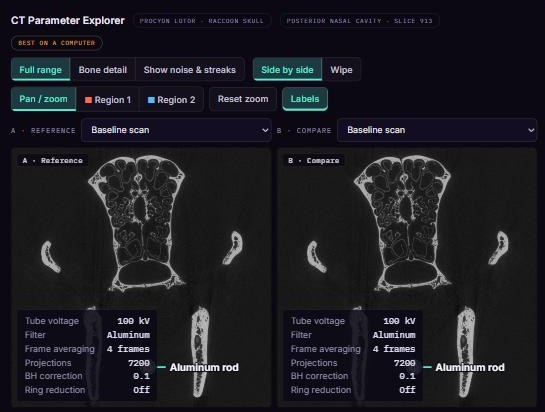

Best on a computer
CT Parameter Explorer
See how scan settings change a CT image. Compare slices of a raccoon skull scanned with different tube voltages, beam filters, frame averaging, numbers of projections, beam-hardening correction, and ring reduction, side by side or with a wipe.
Zoom in on the same spot in both images and jump between anatomical levels to see what each setting changes.
Launch the CT Parameter Explorer →